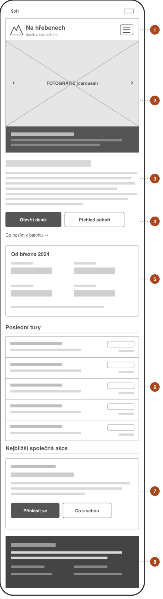

Wireframe úvodní stránky na mobilu
Rozvržení domovské stránky na běžném smartphonu o šířce 390 px. Na mobilu jsou všechny bloky pod sebou v jednom sloupci, pořadí odpovídá pořadí v HTML.

Popis prvků
- Hlavička. Logo (ikona hor a textový název „Na hřebenech“ s podtitulem) vlevo, vpravo tlačítko „hamburger“. Po kliknutí se rozbalí menu se šesti položkami s ikonami: Úvod, Deník túr, Pohoří, Výbava, Galerie, Společné akce. Hlavička zůstává při scrollování přilepená nahoře.
- Carousel. Hned pod menu, přes celou šířku displeje. Čtyři rotující fotografie hor se šipkami pro ruční přepnutí. Na mobilu je text popisku pod fotkou v tmavém pruhu, aby nezakrýval obrázek; na větších displejích leží přes fotku.
- Nadpis a úvodní text. Hlavní nadpis stránky (h1) a tři krátké odstavce o tom, o čem web je.
- Tlačítka. Hlavní akce „Otevřít deník“ (plné tlačítko), vedlejší „Přehled pohoří“ (obrysové) a textový odkaz na výbavu. Na úzkém displeji se zalamují do dalšího řádku.
- Statistiky. Karta se čtyřmi čísly ve mřížce 2 × 2: počet túr, kilometry, převýšení, nejvyšší vrchol. Na desktopu je karta v pravém sloupci vedle textu.
- Poslední túry. Seznam pěti posledních túr (list group). Každý řádek obsahuje vrchol, datum, výchozí bod, štítek s pohořím a délku. Celý řádek je odkaz do deníku.
- Nejbližší společná akce. Karta s datem, trasou a dvěma tlačítky. „Přihlásit se“ vede na formulář, „Co s sebou“ otevře modální okno se seznamem věcí.
- Patička. Název webu, krátký popis, rychlé odkazy a informace o zdrojích fotografií. Na mobilu jsou sloupce patičky pod sebou, respektive po dvou vedle sebe.
Struktura webu
- Úvod (index.html): carousel, úvodní text, statistiky, poslední túry, nejbližší akce, modální okno
- Deník túr (denik.html): tabulka DataTables s 69 záznamy, stránkováním, řazením a vyhledáváním; modální okno s detailem túry
- Pohoří (pohori.html): pět záložek (tabs) s popisem pohoří, akordeon s praktickými poznámkami
- Výbava (vybava.html): karty se seznamy věcí, skládaný progress bar s hmotností, akordeon
- Galerie (galerie.html): mřížka fotografií, zvětšení v modálním okně, zdroje fotografií
- Společné akce (akce.html): tabulka termínů, přihláška s 16 poli, input groups, validace a toast po uložení